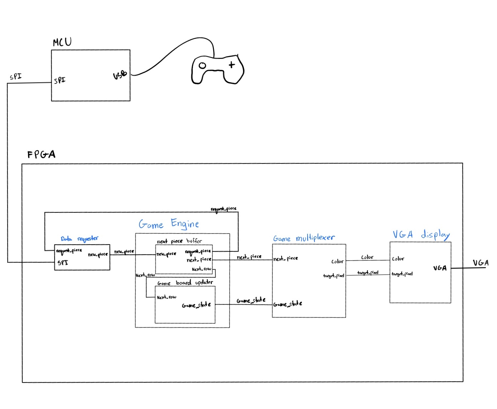

Hardware Tetris Project Proposal
Project Description and Overview
Our project implements the classic game Tetris directly in hardware using an FPGA as the game engine and a microcontroller (MCU) as a peripheral co-processor. The FPGA handles core game logic and VGA display output, while the MCU manages higher-level logic such as random block generation and controller input translation.
We plan to leverage the FPGA for deterministic, processing of visual and game logic while using the MCU for tasks that benefit from flexibility, such as pseudo-random number generation and USB input handling.
Gameplay will be displayed on a VGA monitor at refresh rates exceeding 20 Hz with no flicker or ghosting. The FPGA’s internal memory will maintain the game state and render directly to VGA timing signals. The MCU will periodically supply the FPGA with new pieces and player inputs over a bus interface.

Proficiency Goals
- Display updates at >20 Hz
- Display does not flicker
- Display does not ghost between frames
- Blocks clear at completed lines and update correctly
- Blocks fall at standard rate
- New random blocks appear once the previous block settles
- Game boundaries prevent invalid movement
- No visibly obvious bugs
- Player can control piece movement with button input
Excellency Goals
- Game speeds up progressively
- USB controller used to play game
- Block rotation implemented
- Controller operates in “arcade mode”
- Hard drop implemented
- Next piece preview displayed
FPGA Design Details
The FPGA implements a hardware Tetris engine consisting of the following modules:
VGA Controller
Generates 640×480 @ 60 Hz timing signals and color data from block map memory.
Block Map Memory
Game data stored in on-chip SRAM.
Piece Logic
Determines piece movement, collision detection, and line clears for each frame.
FSM Game Controller
Controls falling timing, piece locking, and score tracking.
MCU Interface Module
Implements a simple SPI slave interface to receive player inputs (left, right, rotate, drop) and new piece identifiers from the MCU.
Clocking & Timing
Uses a 25 MHz system clock for VGA synchronization and deterministic updates at >20 Hz refresh rate.
MCU Design Details
The MCU acts as an intelligent peripheral, responsible for higher-level coordination:
Random Piece Generation
Implements a pseudo-random sequence ensuring fair block distribution.
Controller Interface
Reads inputs from buttons or a USB gamepad and translates them into movement commands.
Communication Bridge
Uses SPI or UART to send player inputs and new-piece data to the FPGA.
Progression Logic (Excellency)
Optionally increases drop speed, handles “arcade mode,” and shows the “next piece” preview by pre-sending upcoming block data.
A small task loop coordinates controller input polling and data buffering.
An interrupt will be used to request data from the MCU.
Budget
| Item | Quantity | Cost | Notes |
|---|---|---|---|
| VGA Breakout | 1× | $14.26 | Purchased |
| GameCube Controller | 1× | $12.00 | Purchased |
| Total | — | $26.26 | |
| STM32 Nucleo-32 MCU | 1× | Have | |
| UPduino iCE40 FPGA | 1× | Have | |
| 1000 ft Wire | 1× | Stockroom | |
| VGA Display | 1× | Borrowed (Xavier) |
Calculations
- SVGA requires 40 MHz for 800×600.
The FPGA will divide the clock by 2 to achieve standard timing.
Schedule
| Week | Task | Hours | Lead |
|---|---|---|---|
| 1 (Start 10/27) | Project demo setup | 2 h | Both |
| VGA implementation | 15 h + | Kaden | |
| MCU–FPGA link | 4 h + | Noah | |
| 2 | FPGA game shifter | 10 h + | Noah |
| MCU randomization + USB logic | 10 h + | Kaden | |
| 3 | Finish game (Proficiency demo) | 3 h + | Both |
| Demo presentation | 2 h + | Both | |
| 4 | Begin Excellency work | 5 h + | Both |
| 5 | Debug | 10 h + | Both |
| Final presentation | 2 h + | Both |
Work Distribution
We plan on distributing work within each project aspect. Most of the time, we will work together in the lab; however, for aspects more appropriate for individual focus, we will assign tasks based on each member’s strengths and experience.